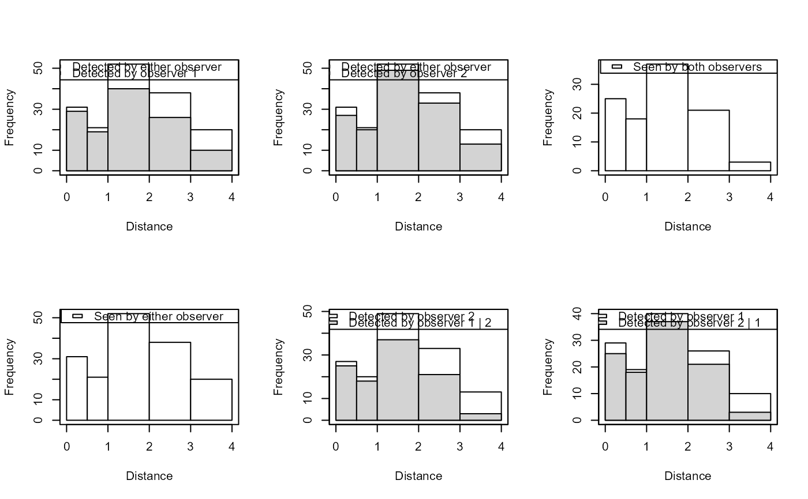

Plot the tables created by det.tables. Produces a series of
tables for dual observer data that shows the number missed and detected for
each observer within defined distance classes.
Usage
# S3 method for class 'det.tables'
plot(
x,
which = 1:6,
angle = NULL,
density = NULL,
col1 = "white",
col2 = "lightgrey",
new = TRUE,
...
)Arguments
- x
object returned by
det.tables- which
items in x to plot (vector with values in 1:6)
- angle
shading angle for hatching
- density
shading density for hatching
- col1
plotting colour for total histogram bars.
- col2
plotting colour for subset histogram bars.
- new
if
TRUEnew plotting window for each plot- ...
other graphical parameters, passed to plotting functions
Details
Plots that are produced are as follows (controlled by the which
argument):
- 1
Detected by either observer/Detected by observer 1
- 2
Detected by either observer/Detected by observer 2
- 3
Seen by both observers
- 4
Seen by either observer
- 5
Detected by observer 2/Detected by observer 1 | 2
- 6
Detected by observer 1/Detected by observer 2 | 1
Examples
# \donttest{
data(book.tee.data)
region <- book.tee.data$book.tee.region
egdata <- book.tee.data$book.tee.dataframe
samples <- book.tee.data$book.tee.samples
obs <- book.tee.data$book.tee.obs
xx <- ddf(mrmodel=~glm(formula=~distance*observer),
dsmodel = ~mcds(key = "hn", formula = ~sex),
data = egdata, method = "io", meta.data = list(width = 4))
tabs <- det.tables(xx,breaks=c(0,.5,1,2,3,4))
par(mfrow=c(2,3))
plot(tabs,which=1:6,new=FALSE)

# }